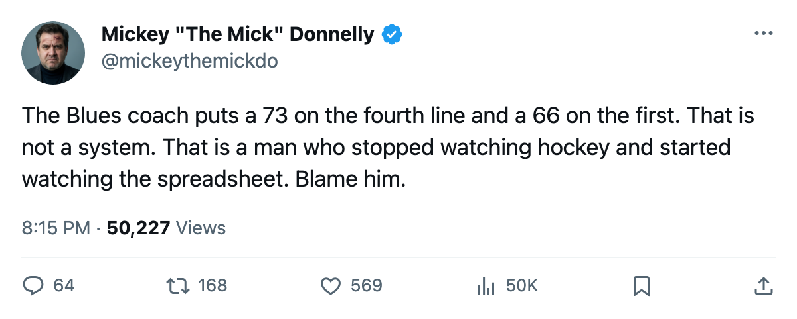
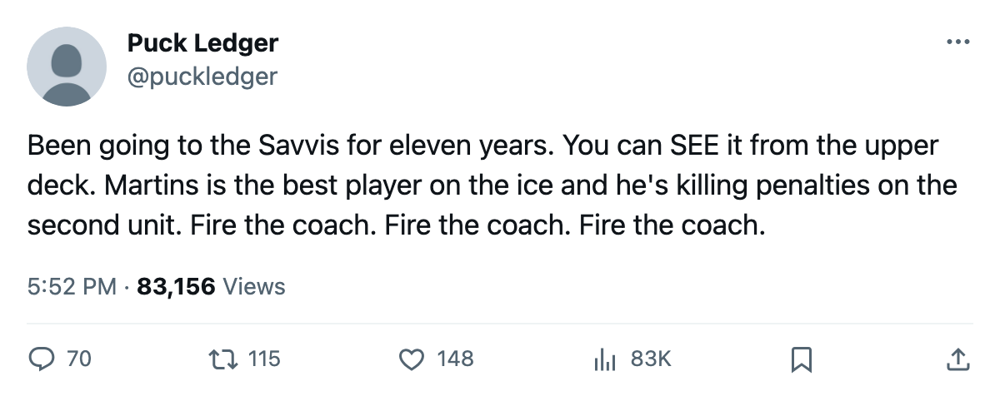

THE 73 IS ON THE FOURTH LINE AND THE COACH KNEW IT
St. Louis parks a better player below a worse one, wins nothing with either, and banks $10.75 million on the way to the lottery.
 Mickey "The Mick" DonnellyColumnist, ex-goalie · The Penalty Box
Mickey "The Mick" DonnellyColumnist, ex-goalie · The Penalty Box
 St. Louis Blues head coach has a 73-rated centerman who plays fourth-line minutes. He also has a 66 playing left wing on the top line. You cannot make this up. You can only look at the Bureau's line chart and feel your jaw drop.
St. Louis Blues head coach has a 73-rated centerman who plays fourth-line minutes. He also has a 66 playing left wing on the top line. You cannot make this up. You can only look at the Bureau's line chart and feel your jaw drop.
 Steve Martins71 sits at 73 overall. His slots read 42C, L3C, P2C. Fourth line center. Third line center. Second power play unit. He is the 4th-best option at the position the coach trusts him with, and the coach trusts him with the bottom.
Steve Martins71 sits at 73 overall. His slots read 42C, L3C, P2C. Fourth line center. Third line center. Second power play unit. He is the 4th-best option at the position the coach trusts him with, and the coach trusts him with the bottom.
Vladimir Kloucek64 sits at 66. His slot reads L1LW. Top line. First left wing. A seven-point gap in the Book and the worse man gets the harder assignment.
The Blues are 21-31-5. They have scored 197 and given up 236. Their goal differential is minus-39. They sit 4th in the Central, 22 points behind  Nashville Predators, and their last ten games read WLLLLWWWOTLW with 23 goals for and 23 against, which means they are exactly as good offensively as they are defensively, which is not good enough to win 21 games in this league by March.
Nashville Predators, and their last ten games read WLLLLWWWOTLW with 23 goals for and 23 against, which means they are exactly as good offensively as they are defensively, which is not good enough to win 21 games in this league by March.
The payroll is $57.44 million. Seventh in the league. The cost per point is $0.88 million. The owner banked $10.75 million. Attendance is 13,936 at $78 a seat. Nobody in St. Louis has to change a single thing.
Blame the coach first. Martins at 73 is a serviceable middle-six center in any other room. The coach looked at that number, looked at Kloucek's 66, and decided the 73 belongs on a line with nobody and the 66 belongs against the other team's best. I have stopped 12 men like Martins in my career and I know what they can do when you put them in a position where the puck actually reaches them.
Tonight they host  Dallas Stars, who have beaten them once in three meetings and lost the other two in regulation and overtime split. Dallas Stars is 35-23-3, the same club that won the Presidents' Trophy last season, and they walk into the Savvis Center looking at a Blues team whose coach cannot line up a top six in the right order.
Dallas Stars, who have beaten them once in three meetings and lost the other two in regulation and overtime split. Dallas Stars is 35-23-3, the same club that won the Presidents' Trophy last season, and they walk into the Savvis Center looking at a Blues team whose coach cannot line up a top six in the right order.
The deadline is 10 days away on the calendar. The Blues need a top-six center. They have one. He is wearing a fourth-line sweater and playing 12 minutes against opposing third lines while the coach tells the post-game pool the structure is working.
 Bryce Salvador67 has 89 penalty minutes.
Bryce Salvador67 has 89 penalty minutes.  Sandy McCarthy65 has 87. Those two are doing the job. The coach is doing the opposite of the job. The owner is doing the math.
Sandy McCarthy65 has 87. Those two are doing the job. The coach is doing the opposite of the job. The owner is doing the math.
And the math works. That is the part that makes me sick.

